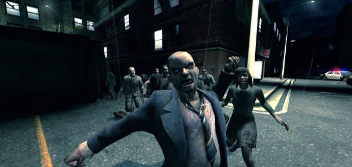
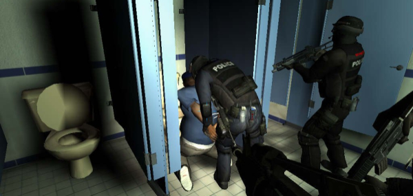
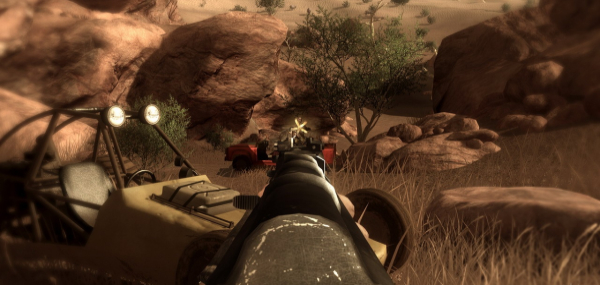
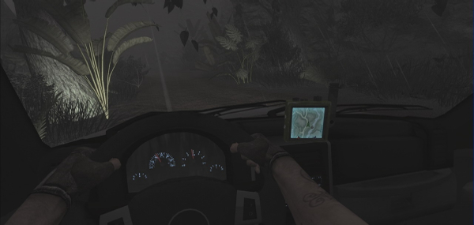
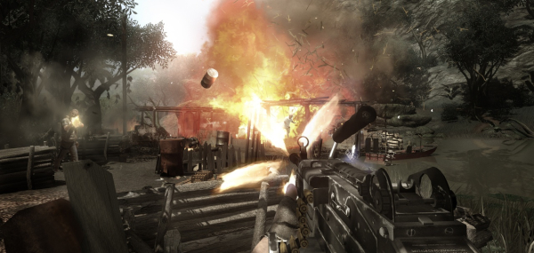

No one ever runs!
2011-03-27 02:20:20
status: inherit
author: Bryan
ACTING TACTICALLY
A sense of self preservation in game AI usually refers to AIs knowing to seek cover when under fire, knowing when to flank or camp, when to hold higher ground, strafe, or provide suppressing fire. The implementation of these AI tactics has taken tremendous strides forward since the early days of Wolfenstein 3D and its ilk, resulting in more immersive and believable combat in games. Games like Half Life and Halo raised the bar - and the advances they made were a mix of moving towards more accurately modeled AI as well as illusions to that effect.
The complaints about deficiencies in this type of AI ultimately point to two main issues: suspension of disbelief and realistic challenge for the player. That is, firstly - when an AI does not realistically react to an attack, by standing still or otherwise, immersion is broken and what usually is intended to be a dramatic moment of combat becomes exasperating or comical. Secondly, when the AI or groups of AIs do not move tactically in response to engagement, challenge disappears for all but the most novice of players.
When I write that a true sense of self-preservation is lacking in game AI - it is not a criticism of these existing measures to improve challenge and believability of combat AIs. These tactics are in high use now with varying degrees of success and I expect that they will continue to improve.
RUNNING FOR IT
What I mean is that there is a dimension of self-preservation which goes nearly completely unaccounted for. To the best of my knowledge, in most tactics-based combat games, AIs dont run for it, don't surrender, don't give up. Every battle is total war - the goal for AIs is destroy or be destroyed, nothing between. The only exception to this rule seems to be retreat as a scripted event.
This dimension of self-preservation is highly dependent on game context. In many games it is entirely believable that a retreat may not be possible, or that there is no choice or desire for anything but destroy or be destroyed - zombies, areas where retreat is impossible, and high stakes battles are some examples.

The Japanese soldiers featured in Call of Duty: World at War are another prime example of fighters who would not back down.

Also some exceptions include games like SWAT 4, where getting a suspect to submit peacefully is often a major goal of gameplay. Finally, strategy games usually incorporate retreat as a viable AI tactic.

RETREAT IN FAR CRY 2
One game where this is not the case is Far Cry 2. The setting of Far Cry 2 is a war-torn fictional African landscape of mercenaries paid to fight by rival factions and warlords. Foreign mercenaries make up the vast majority of AIs the player interacts with, and they aren't fighting for the homeland, defending an ideal, or anything else - they are there to make money. If we accept this as a reasonable background for AI fighters, it is reasonable to believe that these characters are not there to be martyrs. Mercenaries are, as defined by Geneva Convention protocols, "motivated to take part in the hostilities essentially by the desire for private gain" (Additional Protocol I to the Geneva Convention of August 1949). It can be assumed that mercenaries are less willing to throw their lives away, since their cause is purely material in nature. Based on the nature of the setting, Far Cry 2 is rich ground for potentially highly diverse and meaningful interactions with enemy combatants.

One of the common complaints of the game is that in the countryside, at checkpoints, and essentially everywhere but the cease-fire zones, mercenaries of both factions shoot on sight - simplifying what could otherwise be a much more complex set of interactions. In addition to this, mercenaries attack consistently despite apparent situations of high risk. Driving directly into the midst of a checkpoint is one thing; the player would find himself surrounded and under heavy fire by multiple AIs. However consider this situation: the player drives down a dirt road in a truck that happens to have an easily accessible high caliber mounted gun, as a coupe with a single occupant suddenly appeared in the distance. The driver of the coupe notices the player and floors it, ramming the truck head-on. Meanwhile the player has stopped and moved to the gunner position, having trained the sights of the weapon directly at the driver. So what does the driver do now that both vehicles are immobile? He gets out, pulls up his rifle and starts shooting, regardless of the fact that he was in the sights of a much more dangerous weapon before he even stepped out of the car. ...Er...naturally. Obviously its a breeze for the player to gun down the merc without taking a hit.

What would have been a believable response of the AI? To judge this a number of factors should be considered. The merc was a single combatant, facing a single player. Both are in vehicles. The AI's vehicle has no weapon, the player's vehicle has a mounted gun. The player has moved to the gunner position, aiming directly at the AI before he has stepped out from the drivers seat. An intelligent AI ideally should be able to recognize some of these factors and incorporate them into tactical decision making, which in this case would have had the merc attempting to drive the hell away before the player opened fire. Launching a suicide attack was not an intelligent decision.
Another situation: about a dozen AI mercenaries are manning a post of some kind. The player begins a surprise attack, launching rockets at the post from distance, killing the majority of the combatants. The remaining fighters attempt to seek out and engage the player down to the last man, despite the player potentially remaining hidden or maintaining some other highly advantageous position. Again a reasonable assumption would be that a merc AI that survived the initial attack would determine the potential risk to outweigh the benefits, and try to hightail it away from the combat zone or hide in the brush.

To realistically depict an AI's retreat, the game could consider an average merc as having successfully escaped once reaching a certain distance from the player, and that would be the last the player saw of him. Alternately, mission goals could be dynamically altered if a more high priority target managed to escape. What if the game design incorporated such possibilities? The next step would be to assign a new location for the target and give the player additional information to track him down.
POSSIBILITIES
A number of metrics could be incorporated in determining an AI's morale check in Far Cry 2 - how many in the merc group are alive or dead, the degree to which group outnumbers player, the position the player is aiming compared to the relative readiness of the AI, the weapons, equipment, or vehicle of the player, the reputation or notoriety of the player (which in Far Cry 2 was an prime example of unexplored potential), environmental factors (time of day, weather, etc.), as well as potentially randomized social factors (personality traits of mercs, relative pay amounts of mercs). Ultimately these metrics could potentially clutter the AI decision-making process with a huge range of factors to consider in attempting to reach more complex and realistic behaviors, but the resulting decision itself is simple - fight or flight - one of the most primal of instincts.
Far Cry 2 was overall a very well made and beautiful game that felt slightly unfinished in some areas and highly polished in others, which often contributed to the inevitable breaking of immersion and the fourth wall. Getting realistic AI reactions in all situations is of course a lofty goal, but giving AIs additional depth in representing that they value their lives in commonplace combat situations would have given the encounters, storytelling, and setting additional consistency and gravity.
Comments: